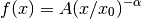

PowerLaw1D¶
-
class
astropy.modeling.powerlaws.PowerLaw1D(amplitude=1, x_0=1, alpha=1, **kwargs) [edit on github][source]¶ Bases:
astropy.modeling.Fittable1DModelOne dimensional power law model.
Parameters: amplitude : float
Model amplitude at the reference point
x_0 : float
Reference point
alpha : float
Power law index
Other Parameters: fixed : a dict
A dictionary
{parameter_name: boolean}of parameters to not be varied during fitting. True means the parameter is held fixed. Alternatively thefixedproperty of a parameter may be used.tied : dict
A dictionary
{parameter_name: callable}of parameters which are linked to some other parameter. The dictionary values are callables providing the linking relationship. Alternatively thetiedproperty of a parameter may be used.bounds : dict
eqcons : list
A list of functions of length
nsuch thateqcons[j](x0,*args) == 0.0in a successfully optimized problem.ineqcons : list
A list of functions of length
nsuch thatieqcons[j](x0,*args) >= 0.0is a successfully optimized problem.Notes
Model formula (with
 for
for amplitudeand for
for alpha):
Attributes Summary
alphaamplitudeparam_namesx_0Methods Summary
evaluate(x, amplitude, x_0, alpha)One dimensional power law model function fit_deriv(x, amplitude, x_0, alpha)One dimensional power law derivative with respect to parameters Attributes Documentation
-
alpha¶
-
amplitude¶
-
param_names= ('amplitude', 'x_0', 'alpha')¶
-
x_0¶
Methods Documentation
-
static
evaluate(x, amplitude, x_0, alpha) [edit on github][source]¶ One dimensional power law model function
-
static
fit_deriv(x, amplitude, x_0, alpha) [edit on github][source]¶ One dimensional power law derivative with respect to parameters
-